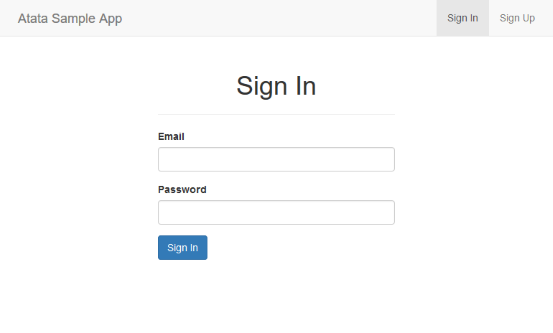
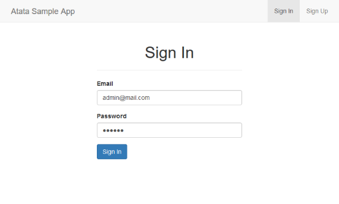

News
{{ post.title }}
{{ post.excerpt }}Upgrade to Atata 4
Features
WebDriver
Provides Selenium WebDriver session functionality. Preserves all WebDriver capabilities for local, remote, and headless browser automation.
Page object model
Provides a unique fluent page object pattern for concise, maintainable page and component definitions.
Components
Includes a rich set of ready-to-use UI testing components for inputs, tables, lists, etc.
Smart verification
Offers fluent assertions, aggregate checks, wait-aware verification, and built-in verification triggers.
Triggers
Includes a set of triggers to bind with different events to extend component behavior.
Configuration
Enables flexible settings, variables, URL templates, environment-aware run options, etc.
Logging and reporting
Built-in customizable structured logging, screenshots, page snapshots, artifact generation, and extensible log consumer support.
Extensible ecosystem
Features a bunch of add-ons such as Atata.HtmlValidation, Atata.NLog, Atata.AspNetCore, Atata.Testcontainers.
Integration
Easily integrates with NUnit, xUnit, MSTest, Reqnroll via dedicated packages. Works flawlessly on CI systems like GitHub Actions, Jenkins, etc.
Usage
Simple example for Sign In page.Define Page Object Class

Implement Test
